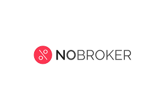
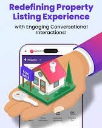
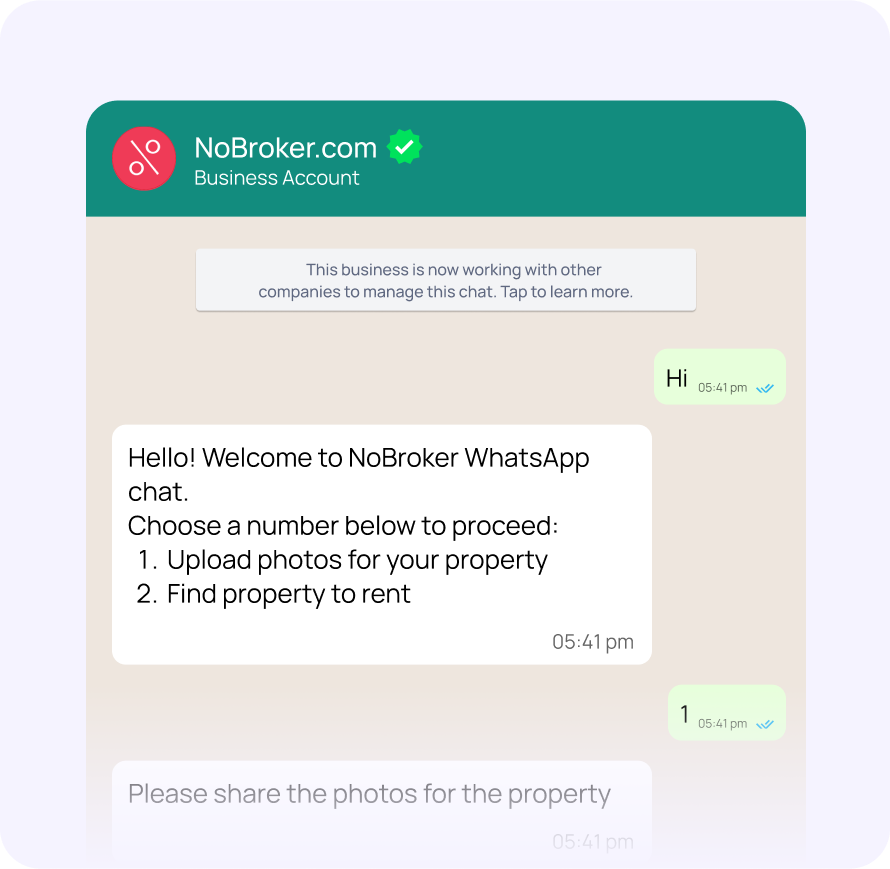

How India's broker-free platform eliminated listing friction and weaponized WhatsApp for conversion dominance.

NoBroker doesn't compete on features or scale. They compete on conversion speed and user friction elimination. Both campaigns prove that utility beats storytelling when the objective is transactions.
This analysis covers two campaigns that redefined real estate tech: WhatsApp-Powered Property Listing — reducing listing time from 3 days to 6 minutes — and Click-to-WhatsApp AI Recommendations — making relevance the new conversion weapon.
The pattern is clear: meet users where they live (WhatsApp), remove broken steps entirely, deliver immediate value.
NoBroker attacked the brutal truth: property owners weren't struggling to find platforms—they were dying completing listing forms. Traditional flows killed supply through friction. NoBroker eliminated the interface entirely.
WhatsApp became the entire experience. No web forms, no callbacks, no app downloads. Property owners listed in minutes through conversational chat—the platform they already used daily. Conversion speed became the competitive weapon.
"Listing time dropped from 3 days to 6 minutes. When friction disappears, conversion follows automatically. NoBroker didn't optimize the funnel—they removed it."
Funnel became direct: intent → WhatsApp chat → guided listing → completion. No drop-offs, no abandonment. Property supply exploded as barriers vanished. ROI scaled aggressively through organic growth, not ad spend.

NoBroker fixed the demand problem: generic messaging failed premium users and dormant customers. Click-to-WhatsApp ads + AI recommendations delivered precision at scale. Relevance became the conversion driver.
Users clicked ads directly into personalized WhatsApp conversations. AI segmented and matched properties instantly—no browsing, no filtering. High-intent renters and premium buyers received exact matches within seconds.
"Relevance beats reach. Click-to-WhatsApp eliminated generic messaging entirely. Higher CTRs, lower CPA, continuous re-engagement through chat flows."
Funnel efficiency was brutal: ad → WhatsApp → AI segmentation → personalized recommendations → conversion. Retargeting became continuous chat flows. Performance metrics crushed: engagement quality skyrocketed, cost per activation plummeted.

3-day listing → 6 minutes. Don't improve broken funnels—eliminate them entirely. Speed converts when friction vanishes.
Users live in WhatsApp. Don't force app/web migration. Meet them where behavior already exists for maximum conversion.
AI recommendations beat generic browsing. Personalized matches convert better than mass listings every time.
WhatsApp chat replaced landing pages entirely. Guided flows reduce cognitive load and increase completion rates.
Chat flows enable ongoing engagement vs. campaign-based retargeting. Active conversations convert better than cold ads.
Functional outcomes beat emotional storytelling when objective is transactions. "List in 6 minutes" converts better than brand films.
NoBroker solved two fundamental real estate problems: supply friction (listing) and demand relevance (matching). WhatsApp became both campaigns' conversion engine.
The universal truth: don't optimize broken systems—rebuild them where users already live. NoBroker proves utility-first marketing converts when emotional storytelling fails.
Brands must prioritize speed, relevance, and platform-native behavior over feature showcases and awareness campaigns.
At Brand Business Talk, we help brands with research, strategy, market insights, and growth recommendations. Let's build your brand growth strategy together.